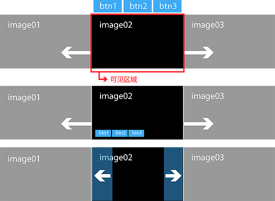
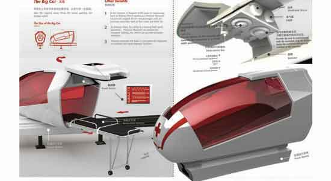

UI模式：走马灯
走马灯的实现机制
走马灯模式常被用于网站首页呈现一些重要的信息，比如活动海报，产品推介等等，这种模式可以很好地吸引用户的眼球。
通常，“走马灯”的HTML结构如下
<div id="carousel">
<nav>
<ul>
<li><a id="btn1" href="#">btn1</a></li>
<li><a id="btn2" href="#">btn2</a></li>
<li><a id="btn3" href="#">btn3</a></li>
</ul>
</nav>
<div id="cnt">
<ul><li><img src="assets/08/01.jpg" /></li><li><img src="assets/08/02.jpg" /></li><li><img src="assets/08/03.jpg" /></li></ul>
</div>
</div>
“走马灯”的设计效果图

| When | Who | What |
|---|---|---|
| 点击 #btn1时 | #cnt ul | CSS的left值移动到0 |
| 点击 #btn2时 | #cnt ul | CSS的left值移动到-550px（每张图都是550px宽） |
| 点击 #btn3时 | #cnt ul | CSS的left值移动到-1100px |
| 文档加载完成时 | #btn1, #btn2, #btn3 | 绑定点击事件处理 |
注意事项：
- 页面初始化。有一张图是默认显示的（在父元素的显示区域之内），其他图都隐藏起来（在父元素的现实区域之外），实现这一点，你需要让父元素的overflow为hidden。
- 图片的移动利用了CSS3 transition，当然你也可以直接用jQuery的animate()方法来实现。
- 如果能设计一个JavaScript函数来控制移动，能让你事半功倍。
- 走马灯模式可能有多个变种：
- 导航按钮的位置可能在显示区域外，也可能叠在显示区域之上
- 图片的切换动画可能是水平移动，也肯能是垂直移动或其他形式的变化（比如透明度或翻转角度）。

- 
制作一个改进版的走马灯（下载PDF设计图）
效果图如下
要求：
- 点击左右箭头，页面向相应方向移动
- 如果到达了最后一张或者第一张，相应的按钮将变成灰色的disable状态